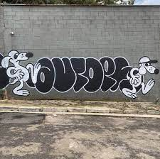
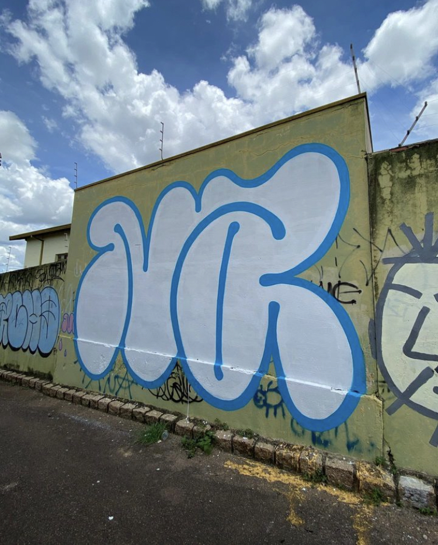

GRAFFITI NA MINHA VIDA
O Graffiti na minha vida veio através do skate e dos meus amigos que andam de skate e realizam esse tipo de arte. Desde pequeno eu tenho aptidões artisticas e essa estética acabou casando com o skate então comecei a praticar.
Com o tempo comecei a desenvolver minhas habilidades e realizar mais trabalhos, fui convidado para eventos de outras cidades, tanto eventos de skate quanto eventos da própria cidade, assim fazendo mais amigos que pintam e melhorando minhas habilidades e desenvolvendo cada vez mais meu graffiti.
Assim como o skate vou citar os 3 principais nomes que são minhas inspirações e referências nesse meio.
Com o tempo comecei a desenvolver minhas habilidades e realizar mais trabalhos, fui convidado para eventos de outras cidades, tanto eventos de skate quanto eventos da própria cidade, assim fazendo mais amigos que pintam e melhorando minhas habilidades e desenvolvendo cada vez mais meu graffiti.
Assim como o skate vou citar os 3 principais nomes que são minhas inspirações e referências nesse meio.
WECKMAN
Weckman um artista das ruas da Russia que faz videos testando e indicando materias para o graffiti oque é muito dificil de encontrar algo parecido, ele ao mesmo tempo que testa faz suas artes e grava assim divulgando com é o seu dia á dia com graffiti.

AUTOPS
Autops que ja faz um graffiti mais cartoom com referencias de desenhos antigos sendo eles simples e avançados ao mesmo tempo, tem o seu personagem padrão que ja foi estampado em metros e outdoors no mundo a fora.

NATIVE
Native um artista do interior de SP que faz com o seu principal carimbo o NA que seria abreviação de Native, usando cerca de 80% de seus graffitis a cor azul e branco para padronizar e espalhar sua arte.